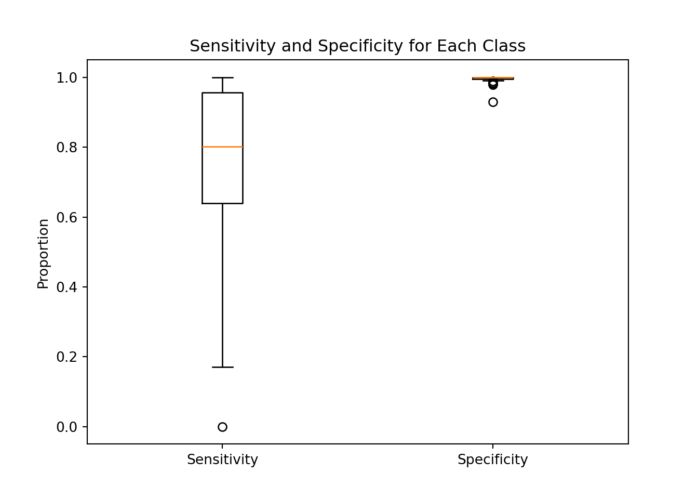
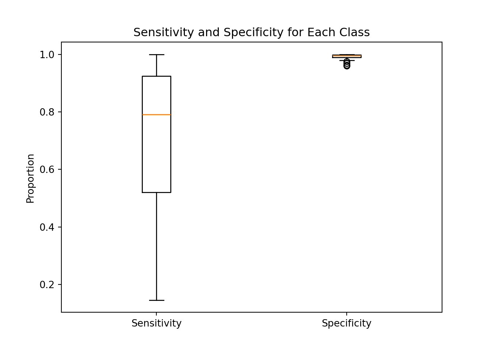
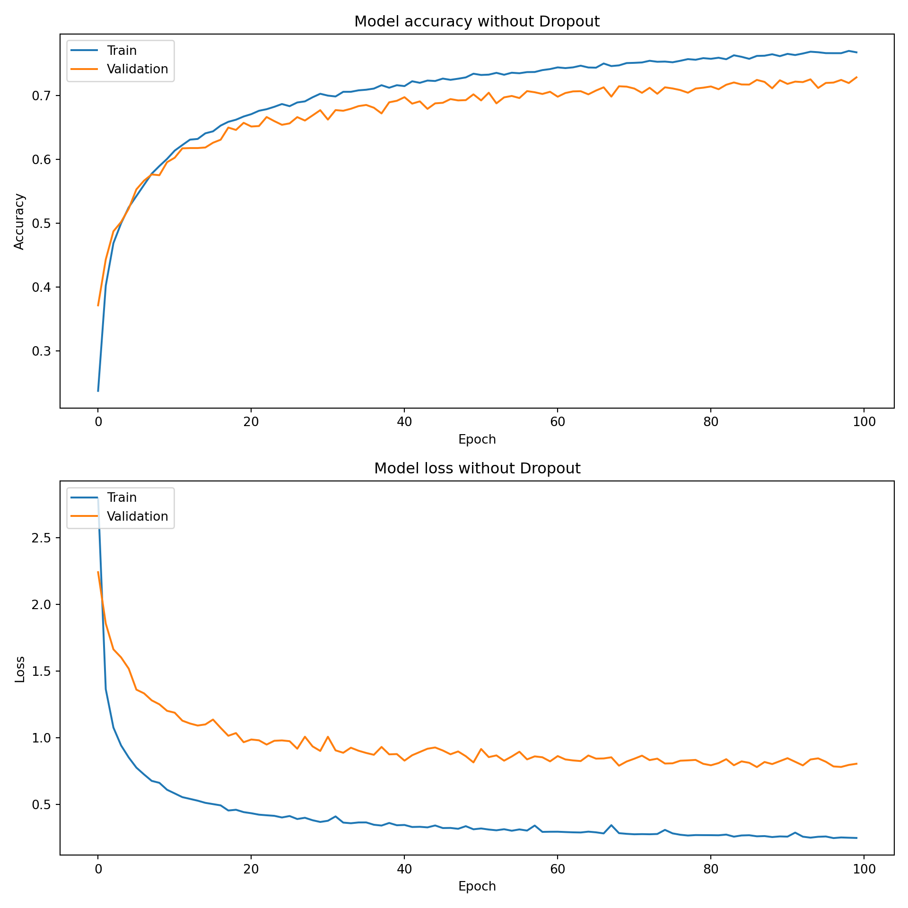
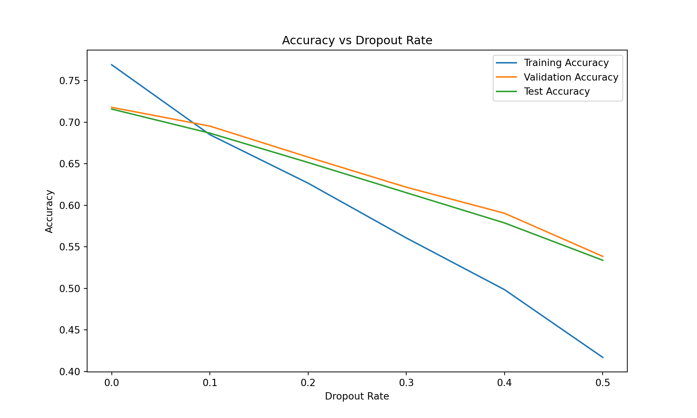
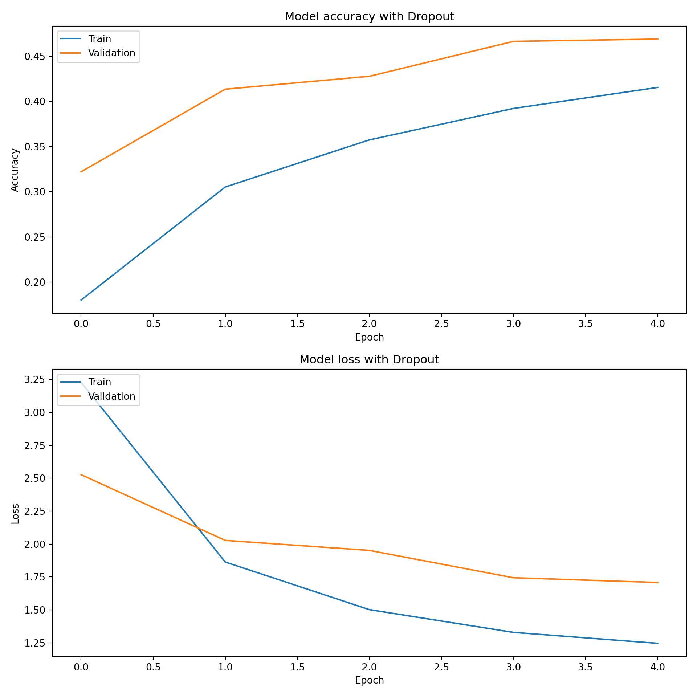

# Define the neural network model
model_no_dropout = Sequential([
Input(shape=(X_train.shape[1],)),
Dense(128, activation='relu'),
Dense(64, activation='relu'),
Dense(y_train.shape[1], activation='softmax')])Neural Network
In this section, we will build a neural network model to predict the make of a car based on the features at our disposal. We will preprocess the data, split it into training and testing sets, define the neural network architecture, compile the model, train it and evaluate its performance.
Preprocessing and splitting the data
The dataset contains different types of data. Some columns are numerical (like “city_mpg_fuel_type_1” or “charge_time_240v”), and some are categorical (“vehicle_class” or “fuel_type”). We identify and separate these two types of columns. Separating numerical and categorical columns is an essential step in data preprocessing because they require different types of handling to prepare them for machine learning algorithms. The numerical columns need to be scaled by adjusting them so they have a mean of zero and a standard deviation of one, which helps the machine learning algorithm perform better. While the categorical columns need to be one-hot encoded which creates a binary column a format that the machine learning model can understand.
The data is split into two parts: training and testing. The training set is used to train the model, and the testing set is used to evaluate its performance. This split ensures that we can test how well the model generalizes to new, unseen data.
Building the neural network models and training them
Base Neural Network
We chose to use a neural network. This neural network consists of layers of neurons, where each layer applies transformations to the data. The first layer takes the input features. Then some Hidden layers help the model learn complex patterns. In the end, the output layer predicts the probability of each car manufacturer. The first layes, the input layer, takes the input features. The second layers is set to 128 neurons, the third to 64 neurons and the last layer, the output layer, has as many neurons as there are car manufacturers. The activation function used in the hidden layers is the Rectified Linear Unit (ReLU), and the output layer uses the Softmax activation function. The model is compiled with the Adam optimizer and the categorical crossentropy loss function.
We used activation functions in the hidden layers to introduce non-linearity into the model. The ReLU activation function is used in the hidden layers because it is computationally efficient and helps the model learn complex patterns in the data. The Softmax activation function is used in the output layer because it converts the model’s raw output into probabilities that sum to one. This allows us to interpret the model’s output as the probability of each car manufacturer.
We used the following hyperparameters (non-exhaustive list):
- epochs: 5 (Corresponds to the number of times the model sees the entire dataset during training.)
- batch_size: 32 (Corresponds to the number of samples that the model processes before updating the weights.)
- validation_split: 0.2 (Corresponds to the fraction of the training data to be used as validation data.)
The model is trained for 5 epochs with a batch size of 32. The validation split is set to 0.2, which means that 20% of the training data is used for validation.
{'whiskers': [<matplotlib.lines.Line2D object at 0x38b5b53a0>, <matplotlib.lines.Line2D object at 0x38b5b4ec0>, <matplotlib.lines.Line2D object at 0x38b5b5a00>, <matplotlib.lines.Line2D object at 0x38b5b55b0>], 'caps': [<matplotlib.lines.Line2D object at 0x38b5b4bf0>, <matplotlib.lines.Line2D object at 0x38b5b4620>, <matplotlib.lines.Line2D object at 0x38b5b44a0>, <matplotlib.lines.Line2D object at 0x38b5b5fa0>], 'boxes': [<matplotlib.lines.Line2D object at 0x353f136e0>, <matplotlib.lines.Line2D object at 0x38b5b4890>], 'medians': [<matplotlib.lines.Line2D object at 0x38b5b49e0>, <matplotlib.lines.Line2D object at 0x38b5b6270>], 'fliers': [<matplotlib.lines.Line2D object at 0x367df0110>, <matplotlib.lines.Line2D object at 0x38b5b64e0>], 'means': []}
By looking at the boxplot representing the distribution of the sensitivity and specificity for the classes, we see a clear sign of unbalanced classes. The sensitivity and specificity are not consistent across the classes. This is a sign that the model is not performing well on all classes. Some of the classe, having more vehicle models, the model automatically prefer to predict those vehicles models more than some rare one. We will use class weights to address this issue.
Adding class weights to the model
{'whiskers': [<matplotlib.lines.Line2D object at 0x353f12c90>, <matplotlib.lines.Line2D object at 0x38b0d56a0>, <matplotlib.lines.Line2D object at 0x38d0bcd70>, <matplotlib.lines.Line2D object at 0x38d0bd0a0>], 'caps': [<matplotlib.lines.Line2D object at 0x3687e0680>, <matplotlib.lines.Line2D object at 0x38d0bc1a0>, <matplotlib.lines.Line2D object at 0x38d02de20>, <matplotlib.lines.Line2D object at 0x38d0c0e90>], 'boxes': [<matplotlib.lines.Line2D object at 0x38d0e2e10>, <matplotlib.lines.Line2D object at 0x38d0bca70>], 'medians': [<matplotlib.lines.Line2D object at 0x38d0bc440>, <matplotlib.lines.Line2D object at 0x38bbc7740>], 'fliers': [<matplotlib.lines.Line2D object at 0x38d0bc920>, <matplotlib.lines.Line2D object at 0x38d0bcf50>], 'means': []}
As we can see the model performed better with class weights. The sensitivity and specificity are more consistent across the classes. The model is better at generalizing to new data. In our case, this method does not eliminate completely the issue of unbalanced classes. Given the structure of our data and the discrepancy of our classes, we will use this technique for the following neural networks and move on. We can now look at the evolution of the accuracy during the training process with the following plot.

As we can see, at each epoch, the accuracy is increasing and the loss is decreasing. The model is learning from the training data and improving its predictions.
But, in the end, we have a case of overfitting. The model performs well on the training data but not as well on the testing data. This is an issue because it limits the possibility of generalizing the model to new data.
Final Training Accuracy: 0.7495Final Validation Accuracy: 0.7112Test Accuracy: 0.6909Overall, the performance of the model is still good. However the quality can be improved. To address the issue of overfitting and to improve the model performance, we will introduce Dropout layers in the neural network. We will also see if Cross-validation can help to improve the model’s performance later.
Neural Network with Dropout layers
Dropout layers randomly set a fraction of input units to zero during training, which helps prevent overfitting by forcing the model to learn more robust features. We will tune the dropout rate to find the optimal value that balances training and validation accuracy and that insure to reduce overfitting.
We used the following hyperparameters (non-exhaustive list):
- epochs: 5 (Corresponds to the number of times the model sees the entire dataset during training.)
- batch_size: 32 (Corresponds to the number of samples that the model processes before updating the weights.)
- validation_split: 0.2 (Corresponds to the fraction of the training data to be used as validation data.)
- dropout_rate: varies (Corresponds to the fraction of neurons to drop during training.)
We will try 5 different dropout rates in addition of the case of no dropout. We will train the model with each dropout rate and evaluate its performance on the validation and test sets. We will then plot the training, validation, and test accuracies for each dropout rate to find the optimal value.
# Function to create and compile the model
def create_model(dropout_rate=0.0):
model = Sequential([
Input(shape=(X_train.shape[1],)),
Dense(128, activation='relu'),
Dropout(dropout_rate),
Dense(64, activation='relu'),
Dropout(dropout_rate),
Dense(y_train.shape[1], activation='softmax')
])
model.compile(optimizer=Adam(), loss='categorical_crossentropy', metrics=['accuracy'])
return model
We can see that the model with a dropout rate of 0.2 has the best performance on the test set. This model has a good balance between training and validation accuracy, and it generalizes well to new data. It also eliminate the overfitting issue. We will use this dropout rate of 0.2 to train the final model with dropout layers.

We see that the model with dropout layers performs better that the one without it. We reached a better accuracy on the validation set and the model is not overfitting anymore.
Final Training Accuracy: 55.25%Final Validation Accuracy: 58.77%Test Set Accuracy: 58.07%{'whiskers': [<matplotlib.lines.Line2D object at 0x3068fb830>, <matplotlib.lines.Line2D object at 0x30031bad0>, <matplotlib.lines.Line2D object at 0x3003d51c0>, <matplotlib.lines.Line2D object at 0x3003d5490>], 'caps': [<matplotlib.lines.Line2D object at 0x30031b890>, <matplotlib.lines.Line2D object at 0x3003d42c0>, <matplotlib.lines.Line2D object at 0x3003d5790>, <matplotlib.lines.Line2D object at 0x3003d5a00>], 'boxes': [<matplotlib.lines.Line2D object at 0x30685d040>, <matplotlib.lines.Line2D object at 0x3003d4e90>], 'medians': [<matplotlib.lines.Line2D object at 0x3003d4950>, <matplotlib.lines.Line2D object at 0x3003d5c70>], 'fliers': [<matplotlib.lines.Line2D object at 0x3003d4c80>, <matplotlib.lines.Line2D object at 0x3003d5f40>], 'means': []}Code
# Number of folds
k = 5
kfold = KFold(n_splits=k, shuffle=True, random_state=42)
# Initialize lists to store accuracies
training_accuracies = []
validation_accuracies = []
for train_index, val_index in kfold.split(X_train):
X_train_split, X_val_split = X_train[train_index], X_train[val_index]
y_train_split, y_val_split = y_train[train_index], y_train[val_index]
# Create and train the model
model = create_model(dropout_rate=dropout_rate_to_plot)
history = model.fit(X_train_split, y_train_split, epochs=100, batch_size=32,
class_weight=class_weights_dict, validation_data=(X_val_split, y_val_split), verbose=0)
# Collect accuracy data
training_accuracy = history.history['accuracy'][-1]
validation_accuracy = history.history['val_accuracy'][-1]
training_accuracies.append(training_accuracy)
validation_accuracies.append(validation_accuracy)
# Evaluate on the test set
test_loss, test_accuracy = model.evaluate(X_test, y_test, verbose=0)
# Calculate average accuracies
average_training_accuracy = np.mean(training_accuracies)
average_validation_accuracy = np.mean(validation_accuracies)
average_test_accuracy = np.mean(test_accuracies)
print(f'Average Training Accuracy: {average_training_accuracy:.4f}')Average Training Accuracy: 0.5510Code
print(f'Average Validation Accuracy: {average_validation_accuracy:.4f}')Average Validation Accuracy: 0.5924Code
print(f'Average Training Accuracy: {average_training_accuracy:.4f}')Average Training Accuracy: 0.5510Code
print(f'Average Validation Accuracy: {average_validation_accuracy:.4f}')Average Validation Accuracy: 0.5924Code
print(f'Average Test Accuracy: {average_test_accuracy:.4f}')Average Test Accuracy: 0.5552